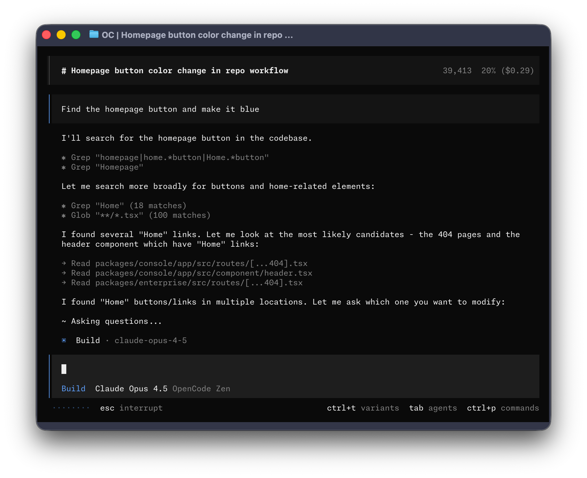

KEEP인라인 main-buffer 구조
TERMINAL UX FIELD AUDIT / WINDOWS CONPTY + OFFICIAL SOURCES
더 많은 정보보다
더 빠른 판단이 먼저다.
Akra는 이미 인라인 스크롤백, 반응형 composer, typed frame, 병렬 운영 보드라는 좋은 뼈대를 갖췄다. 지금의 병목은 기능 부족이 아니라 상태·경고·다음 행동의 우선순위가 한눈에 모이지 않는 것이다.
120×30 실제 ConPTY
80/120/160 반응형 계약
6 경쟁 제품
12 개선 항목
AKRA / prerelease
READY
● queue 5 · agents 2/3 · terminals 1
! notice 1 · Ctrl+D details
WORK Review 2/4 · 03:18
✓ Context 42s
◆ Review 2 agents running
○ Verify
○ Deliver
› Describe a task or type : for commands
CHANGE경고와 상태의 의미 계층
UNIFYtask·agent·terminal 진행 화면
CURRENT PRODUCT / REPRODUCED
추측이 아니라 실제 Akra 화면에서 시작했다
현재 브랜치 바이너리를 Windows ConPTY 120×30에서 실행하고 실제 Codex app-server에 연결했다. PNG는 경로를 익명화한 텍스트·배치 증거이며, 정확한 semantic color 기준은 저장소 snapshot과 기존 E3 캡처다.
상단 리본과 열린 composer는 간결하다. 반면 원시 app-server notification이 한 줄을 차지하고 끝이 잘려, 중요도와 다음 행동을 알 수 없다.
검색·선택·삽입의 핵심 기능은 이미 있다. 다음 단계는 명령의 현재 사용 가능 여부, 인자 예시, 선택 후 결과를 별도 detail row에 보여주는 것이다.
검사 결과는 충분하지만 긴 경로와 policy 문자열이 같은 밀도로 흐른다. “무슨 문제·영향·해결·재검증” 순서의 operator card가 필요하다.
전체 명령을 확인할 수 있지만 긴 :activity signature가 120열에서도 잘린다. palette detail과 폭별 copy budget이 필요한 직접 증거다.
기존 120→48→120 물리 resize 검증은 stale row 없이 통과했다. 이 계약은 새 UX에서도 반드시 보존할 자산이다.
lane·selected detail·delivery gate 구조는 좋다. 다만 일반 turn의 task·background terminal·agent 진행과 떨어져 있어 운영자가 여러 화면을 오가게 된다.
DIAGNOSIS / KEEP THE CONTRACT
현재 Akra의 강점과 부족한 점
KEEP
이미 상용 기반에 가까운 것
- 인라인 main-buffer대화 scrollback과 live tail의 책임 분리가 명확하다.
- 반응형 composer좁은 폭에서도 입력·커서·복원이 검증돼 있다.
- typed frame model렌더러가 권위 상태를 새로 만들지 않는다.
- 병렬 delivery gateunknown을 성공처럼 꾸미지 않는 운영 의미가 있다.
- 검색형 palette명령 검색·선택·argument entry 기반이 이미 존재한다.
FIX
상용 UX에서 체감되는 간극
- 주의 신호가 원시 문자열심각도·영향·행동이 분리되지 않는다.
- 진행 정보가 분산:activity, :parallel, :peek, 상태 리본이 서로 떨어져 있다.
- palette detail 부족상태별 가능 여부와 인자·결과 설명이 약하다.
- 진단의 정보 밀도정상 check와 실제 blocker가 비슷한 무게로 보인다.
- 복귀 맥락 부족오래 자리를 비운 뒤 무엇이 끝났는지 한 줄 요약이 없다.
설계 원칙
TUI는 authority가 아니다. 새 화면은 application/domain 상태를 읽는 projection이어야 하며, history identity·queue authority·delivery truth를 렌더 편의를 위해 복제하지 않는다.
COMPETITIVE READ / OFFICIAL SOURCES
경쟁 제품에서 가져올 것은 ‘크롬’이 아니라 판단 구조다
공식 문서·공식 저장소·고정된 공식 이미지로만 기능을 확인했다. 마케팅 이미지는 런타임 정확성 증거가 아니므로 별도 표시했다.
Grok Build
전체화면·마우스 TUI라 Akra와 소유권 모델은 다르지만, 대규모 workflow의 상태 압축은 가장 직접적인 참고 대상이다.
─ Workflows ─
[×] pr-review · agents 0/128 · 12s
Phases
› 1 Context
2 Review
3 Verify
4 Synthesize
↑↓ phase · enter agent · p pause · x stop · s save
- 차용
- phase·agent count·elapsed·control을 한 viewport에 결합
- 보류
- fullscreen ownership과 mouse-first navigation
Codex CLI

명령 popup, 사용자가 고르는 statusline 항목, background terminal의 최근 출력 preview가 강점이다.
- 차용
- 상태선 항목 선택·background output의 bounded preview
- 보류
- Akra 고유 queue/delivery 의미를 일반 chat status로 축소
OpenCode

command description, keybind·diff·mouse·attention 설정이 TUI 전용 구성으로 정리돼 있다.
- 차용
- palette 설명 품질·attention event의 명시적 분류
- 보류
- theme 자유도가 semantic color 의미를 무너뜨리는 설정
Claude Code
Ctrl+T
Task list최대 5개 작업을 status area에 표시
recap
Return context자리를 비운 뒤 한 줄 요약
PR
Review statefooter에서 승인·변경요청 상태 표시
- 차용
- 복귀 recap·bounded task list·PR 상태의 지속 노출
- 보류
- shell script가 statusline 의미를 임의 재정의하는 구조
Gemini CLI
Ctrl+O
Debug console일반 대화와 상세 로그를 분리
!
Shell mode색과 indicator로 입력 모드 구분
/mcp
Progressive detailtool description을 toggle
- 차용
- 진단 detail toggle과 명확한 mode indicator
- 보류
- Akra prompt에서 직접 shell mode를 추가하는 것
Pi

화면 밀도는 높지만 prompt와 statusline이 명확하고, extension이 UI를 확장하는 경계가 문서화돼 있다.
- 차용
- 작고 지속적인 model·token·mode context
- 보류
- 기능을 한 화면에 과밀하게 상시 노출
| 판단 과제 | Akra 현재 | Codex | Grok Build | OpenCode | Claude | Gemini |
|---|---|---|---|---|---|---|
| 명령 발견 | 기반 있음 | 강함 | 강함 | 강함 | 강함 | 강함 |
| 장기 작업 진행 | 분산 | 부분 | 강함 | 부분 | 강함 | 부분 |
| 병렬 agent 가시성 | 강함 | 강함 | 강함 | 강함 | 부분 | 낮음 |
| 진단·복구 | 정확/과밀 | 강함 | 부분 | 부분 | 부분 | 강함 |
| 좁은 폭 의미 보존 | 검증됨 | 강함 | 전체화면 | 강함 | 부분 | 부분 |
| 운영 authority 충실도 | 고유 강점 | session 중심 | workflow 중심 | session 중심 | task 중심 | session 중심 |
TOP 3 / COMMERCIAL UX SLICES
먼저 바꿀 세 가지
P001semantic rail
상태·경고·행동을 두 줄에
Operator Ribbon
원시 notification을 그대로 보여주지 말고 severity·영향·detail action으로 분류한다. 정상 상태는 한 줄, 주의가 있을 때만 두 번째 줄을 사용한다.
BEFORE
warning: app-server sent notification `remoteC...AFTER
READY · queue 0 · agents 0/3 · terminals 1
! runtime notice 1 · Ctrl+D details- 80/120/160열에서 상태 이름과 action key는 절대 잘리지 않는다.
- 동일 원인의 warning은 count로 합치고 raw payload는 diagnostics로 보낸다.
- live tail만 갱신하며 committed scrollback identity를 바꾸지 않는다.
live_status_layout.rstail_copy.rstyped notice projection
P002command context
기존 palette를 상용 수준으로
Contextual Command Palette
새 palette를 만드는 일이 아니다. 현재 19개 command registry에 상태 badge, disabled reason, argument preview, 예상 결과를 추가한다.
› :pa
palette 1/3 · parallel ready
› :parallel READY operations board 열기
:peek LOCKED agent가 시작된 뒤 사용
:activity READY 작업 이벤트 보기
Enter 실행 · detail: accepted queue를 최대 3개 lane에 dispatch
- 선택 command의 인자·부작용·현재 가능 여부를 한 줄로 설명한다.
- 좁은 폭에서는 설명→badge 순서로 접고 command 이름은 보존한다.
- 실행 가능성은 UI 추측이 아니라 application readiness를 매핑한다.
inline_shell_commands.rsprompt_composer.rslanguage.rs
P003unified work
:activity · :parallel · :peek의 공통 입구
Work Center
현재 화면들을 폐기하지 않고 상위 summary projection을 추가한다. task phase, agent lane, background terminal, approval, delivery를 한 viewport에서 훑고 기존 상세 화면으로 들어간다.
WORK Review 2/4 · agents 2/3 · terminals 1 · 03:18
────────────────────────────────────────────────────
✓ Context 42s repo graph + constraints
◆ Review 2 active slot-1 API · slot-2 tests
○ Verify waiting requires review results
○ Deliver blocked PR policy
────────────────────────────────────────────────────
Enter detail · V agent · T terminal · p pause · x stop · Esc close
- 정확한 session history가 없으면 “unknown”을 유지하고 가짜 progress를 만들지 않는다.
- selected item만 bounded detail을 받고, 16-row inline viewport 예산을 지킨다.
- 기존 Parallel Operations와 activity card의 typed projection을 재사용한다.
InlineInspectionFrameModelParallel projectionactivity overlay state
PRIORITIZED BACKLOG / 12 ITEMS
나머지 개선 목록
Semantic operator ribbon
raw notification을 상태·영향·action으로 압축한다.
Contextual command palette
availability, argument, disabled reason, expected result를 추가한다.
Unified Work Center
task·agent·terminal·approval·delivery의 공통 summary 화면을 만든다.
Operator-grade failure card
실패를 “원인 / 영향 / 해결 / 재검증” 순서로 보여준다.
Return recap
idle 후 복귀할 때 완료·차단·대기 중인 핵심 변화만 한 줄로 요약한다.
Plan / approval review density
승인 대상, diff 규모, 위험, 선택지를 같은 viewport에 묶는다.
PR delivery state in footer
draft·review·changes requested·merged를 delivery authority에서 읽어 표시한다.
No-clipping copy budget
명령 signature와 action key의 80/120/160열 축약 순서를 명시한다.
Background terminal preview
명령, 상태, 최근 비어 있지 않은 2~3줄만 bounded preview한다.
Statusline density preset
semantic 항목은 고정하되 compact / operator 두 밀도 preset을 제공한다.
Attention notification policy
질문·승인·완료·오류만 terminal blur 상태에서 선택적으로 알린다.
Transcript operations
last response copy, turn diff, raw event view를 명령 팔레트에서 찾게 한다.
DELIVERY ORDER / REVIEWABLE SLICES
한 번에 갈아엎지 않는 구현 순서
- Slice A
Notice classification + ribbon
가장 자주 보이는 ready/blocked/active 화면의 신호 대 잡음비부터 개선한다.
증거: 80/120/160 snapshots + blocked startup + 실제 ConPTY - Slice B
Palette detail model
registry와 reducer는 유지하고 presentation metadata와 readiness mapping만 확장한다.
증거: filter/no-match/argument/disabled snapshot + keyboard flow - Slice C
Work Center summary projection
기존 parallel/activity detail을 공통 inspection viewport로 묶는다.
증거: idle/running/blocked/desync + 80/120/160 + resize/close - Slice D
Failure cards + recap
실패 해결과 복귀 맥락을 보강하고 긴 작업의 operator loop를 완성한다.
증거: Windows ACL, missing runtime, public repository blocker fixtures
실터미널
Windows Terminal/WSL, PowerShell, tmux, direct xterm에서 물리 resize와 scrollback을 확인한다.
결정론 렌더
모든 새 copy가 지정 폭에서 잘리지 않고 우선순위대로 축약되는지 snapshot으로 고정한다.
아키텍처
TUI가 queue, delivery, agent lifecycle을 새로 저장하거나 추정하지 않는지 contract test로 막는다.
키보드·색상
색 없이도 상태가 읽히며 focus, Esc, Ctrl+C, narrow cursor 동작이 일관적인지 확인한다.
EVIDENCE LEDGER
자료와 해석의 경계
현재 재현
2026-07-31 현재 브랜치 바이너리 + Windows ConPTY + 실제 Codex app-server.
실터미널 E3기존 commit의 실제 tmux PTY 관찰. 현재 브랜치의 완전한 E1–E4 재검증은 아님.
결정론 렌더Ratatui TestBackend snapshot에서 렌더한 텍스트 권위.
공식 문서제품 기능 설명. Akra 적용안은 이 자료에서 도출한 설계 판단.
공식 이미지표현 참고용. 성능·정확성·현재 기본값을 증명하지 않음.
Akra 내부 근거
공식 웹 자료 확인일: 2026-07-31 (Asia/Seoul). 공식 이미지의 pinned commit·SHA-256은 asset provenance에 기록돼 있다.